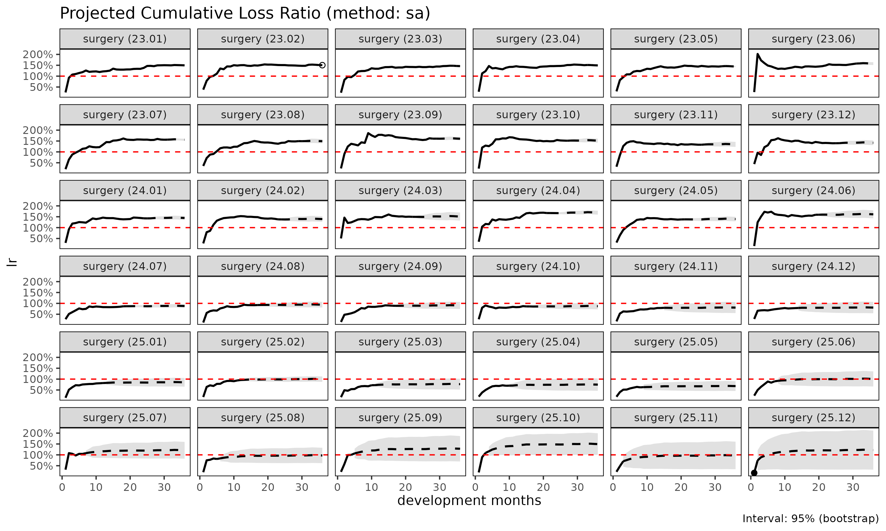
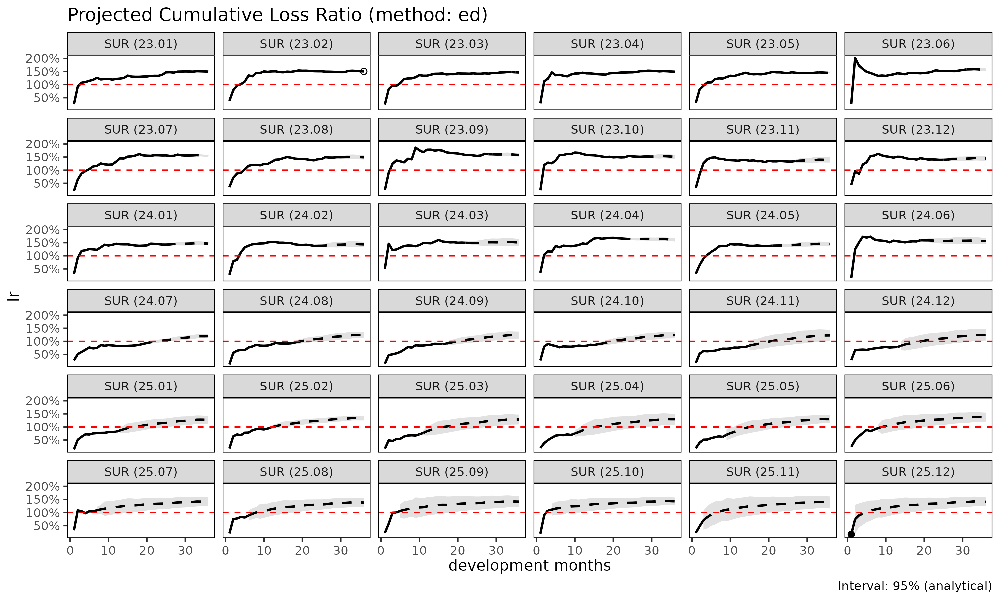
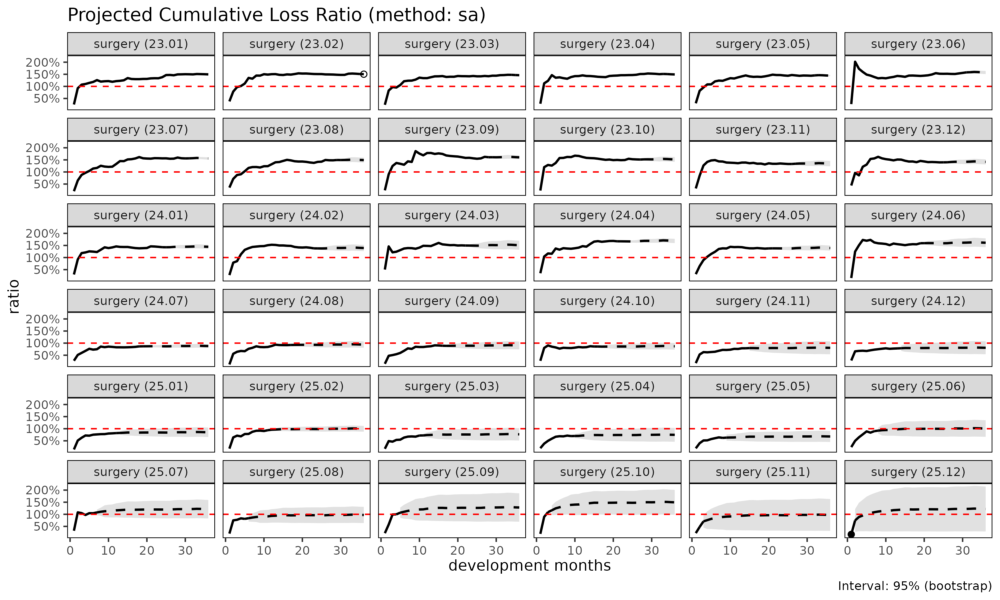

fit_lr() 은 Triangle 객체로부터 코호트별
누적 손해율을 추정한다. 세 가지 방법이 제공되며, 본 문서는 각 방법의
장단점을 설명한다.
표기
코호트 , dev 에 대하여:
- — 누적 손해액
- — 누적 위험보험료 (익스포저)
- — ATA 인자(age-to-age factor)
- — 노출 기반(exposure-driven, ED) 강도
- 성숙점(maturity point) — 그룹 에서 가 안정화되는 dev (CV / RSE 임계값으로 탐지)
방법 1: 단계 적응형(stage-adaptive, SA) ("sa",
default)
기본 방법은 가 초반에는 변동성이 크고 후반에는 안정적이라는 사실, 그리고 는 그 반대로 움직인다는 사실을 활용한다. SA 는 성숙점에서 추정량을 전환한다:
특성:
- 성숙점 이전: 손해 추정치가 익스포저에 비례한다. 초기 가 노이즈로 폭주하는 문제를 회피한다.
- 성숙점 이후: 코호트 자체의 관측 수준을 보존한다. ED 방법이 꼬리에서 모든 코호트를 평균으로 끌어당기는 문제를 회피한다.
사용 시점:
- 발달이 여러 해에 걸치는 long-tail 상품.
- 최근 코호트(미성숙 데이터)와 오래된 코호트(성숙 데이터)가 혼재하는 경우.
- 성숙점 이전·이후의 구조적 차이가 있는 건강보험 코호트 (예: 면책기간 전환).
library(lossratio)
data(experience)
tri <- as_triangle(
experience[coverage == "surgery"],
groups = "coverage",
cohort = "uy_m",
calendar = "cy_m",
loss = "incr_loss",
prem = "incr_prem"
)
lr_sa <- fit_lr(tri, method = "sa") # default
plot(lr_sa, metric = "lr")
summary(lr_sa)
#> coverage cohort latest loss_ult reserve prem_ult lr_latest
#> <char> <Date> <num> <num> <num> <num> <num>
#> 1: surgery 2023-01-01 410248522 410248522 0 274192564 1.4962059
#> 2: surgery 2023-02-01 976330445 1001441303 25110858 665667720 1.5107824
#> 3: surgery 2023-03-01 978486045 1026151243 47665198 702047332 1.4771448
#> 4: surgery 2023-04-01 2029909919 2186771221 156861302 1464399410 1.5139132
#> 5: surgery 2023-05-01 624219436 697669301 73449865 483147255 1.4543748
#> 6: surgery 2023-06-01 802880717 931393934 128513217 591568799 1.5796369
#> 7: surgery 2023-07-01 2539141549 3050990158 511848609 1958263736 1.5597190
#> 8: surgery 2023-08-01 393678329 488218204 94539875 327535560 1.4945957
#> 9: surgery 2023-09-01 1364052542 1751869308 387816766 1091733892 1.6079808
#> 10: surgery 2023-10-01 979266043 1311793843 332527800 864204933 1.5129472
#> 11: surgery 2023-11-01 604685679 848103123 243417444 630311110 1.3298743
#> 12: surgery 2023-12-01 1026345366 1497869029 471523663 1057060867 1.3981081
#> 13: surgery 2024-01-01 1912177598 2901492851 989315253 2009045340 1.4274951
#> 14: surgery 2024-02-01 733902485 1160045952 426143467 832229795 1.3793745
#> 15: surgery 2024-03-01 415459873 686574148 271114275 454345985 1.4969280
#> 16: surgery 2024-04-01 3286053526 5687484014 2401430488 3372494516 1.6712898
#> 17: surgery 2024-05-01 1451731153 2645801838 1194070685 1899849125 1.3770835
#> 18: surgery 2024-06-01 629668308 1209024555 579356247 750125230 1.5918247
#> 19: surgery 2024-07-01 1250954693 2542927190 1291972497 2891548085 0.8658750
#> 20: surgery 2024-08-01 425346694 918120582 492773888 976935246 0.9236050
#> 21: surgery 2024-09-01 278156543 635470028 357313485 703906575 0.8920448
#> 22: surgery 2024-10-01 352070323 856446521 504376198 984833529 0.8596968
#> 23: surgery 2024-11-01 99050501 260916096 161865595 324081360 0.7871749
#> 24: surgery 2024-12-01 103194013 295637296 192443283 366444614 0.7813438
#> 25: surgery 2025-01-01 227089025 710560093 483471068 833732378 0.8188282
#> 26: surgery 2025-02-01 939163074 3276849152 2337686078 3286151352 0.9377837
#> 27: surgery 2025-03-01 112828845 434950057 322121212 566316398 0.7193486
#> 28: surgery 2025-04-01 82472453 356301148 273828695 476819833 0.6947510
#> 29: surgery 2025-05-01 141214851 697290587 556075736 1027051048 0.6203897
#> 30: surgery 2025-06-01 136406102 789468799 653062697 783037474 0.8981587
#> 31: surgery 2025-07-01 149144024 1040451732 891307708 859730812 1.0440457
#> 32: surgery 2025-08-01 116327076 1008356733 892029657 1037192185 0.8100543
#> 33: surgery 2025-09-01 67465470 783000257 715534787 611257142 0.9985960
#> 34: surgery 2025-10-01 121626173 2001214863 1879588690 1338462726 1.0894657
#> 35: surgery 2025-11-01 15716444 576954661 561238217 593147593 0.4765917
#> 36: surgery 2025-12-01 4825085 1246569307 1241744222 1022559927 0.1689836
#> coverage cohort latest loss_ult reserve prem_ult lr_latest
#> <char> <Date> <num> <num> <num> <num> <num>
#> lr_ult maturity_from loss_proc_se loss_param_se loss_total_se
#> <num> <num> <num> <num> <num>
#> 1: 1.4962059 3 0 0 0
#> 2: 1.5044162 3 2934231 4309793 5213830
#> 3: 1.4616554 3 3982661 5158162 6516765
#> 4: 1.4932888 3 6546789 11609585 13328275
#> 5: 1.4440097 3 4547580 3813039 5934623
#> 6: 1.5744474 3 17628088 8903464 19748953
#> 7: 1.5580078 3 35686361 31442590 47562095
#> 8: 1.4905808 3 16152143 5121110 16944542
#> 9: 1.6046670 3 37357117 20421919 42574746
#> 10: 1.5179199 3 37573001 17215247 41329107
#> 11: 1.3455310 3 35161608 12015326 37157863
#> 12: 1.4170130 3 53162531 22167720 57599154
#> 13: 1.4442147 3 76259904 44384184 88235644
#> 14: 1.3939010 3 51529679 18632983 54795036
#> 15: 1.5111263 3 41482939 11326747 43001505
#> 16: 1.6864324 3 120195326 95592928 153573839
#> 17: 1.3926379 3 88447102 46270702 99819176
#> 18: 1.6117636 3 66834389 21472291 70198966
#> 19: 0.8794345 3 104028932 46251465 113847340
#> 20: 0.9397968 3 62896850 16977280 65147845
#> 21: 0.9027761 3 56583751 11941938 57830189
#> 22: 0.8696358 3 71133708 16328611 72983751
#> 23: 0.8050944 3 41388948 5266012 41722607
#> 24: 0.8067721 3 48660596 6215769 49055982
#> 25: 0.8522640 3 82549103 15683804 84025806
#> 26: 0.9971693 3 193613125 74852479 207578746
#> 27: 0.7680337 3 71295313 10069046 72002829
#> 28: 0.7472448 3 68826316 8438639 69341707
#> 29: 0.6789250 3 116537796 18989499 118074803
#> 30: 1.0082133 3 137078933 22543675 138920305
#> 31: 1.2102064 3 166193829 31402939 169134660
#> 32: 0.9721985 3 184425493 33103273 187372862
#> 33: 1.2809670 3 180452022 27168526 182485783
#> 34: 1.4951592 3 331672128 79057462 340964049
#> 35: 0.9727000 3 190733674 20867271 191871774
#> 36: 1.2190672 3 464027946 65288155 468598419
#> lr_ult maturity_from loss_proc_se loss_param_se loss_total_se
#> <num> <num> <num> <num> <num>
#> loss_total_cv lr_se lr_cv lr_ci_lo lr_ci_hi
#> <num> <num> <num> <num> <num>
#> 1: 0.000000000 0.000000000 0.000000000 1.4962059 1.4962059
#> 2: 0.005206326 0.007832482 0.005206326 1.4890648 1.5197676
#> 3: 0.006350686 0.009282515 0.006350686 1.4434620 1.4798487
#> 4: 0.006094956 0.009101530 0.006094956 1.4754501 1.5111275
#> 5: 0.008506356 0.012283260 0.008506356 1.4199349 1.4680844
#> 6: 0.021203652 0.033384034 0.021203652 1.5090159 1.6398789
#> 7: 0.015589069 0.024287890 0.015589069 1.5104044 1.6056112
#> 8: 0.034706903 0.051733442 0.034706903 1.3891851 1.5919764
#> 9: 0.024302467 0.038997366 0.024302467 1.5282335 1.6811004
#> 10: 0.031505794 0.047823272 0.031505794 1.4241880 1.6116518
#> 11: 0.043812906 0.058951622 0.043812906 1.2299879 1.4610740
#> 12: 0.038454066 0.054489912 0.038454066 1.3102148 1.5238113
#> 13: 0.030410429 0.043919190 0.030410429 1.3581347 1.5302947
#> 14: 0.047235229 0.065841233 0.047235229 1.2648546 1.5229475
#> 15: 0.062631989 0.094644843 0.062631989 1.3256258 1.6966267
#> 16: 0.027002070 0.045537165 0.027002070 1.5971812 1.7756836
#> 17: 0.037727382 0.052540580 0.037727382 1.2896602 1.4956155
#> 18: 0.058062482 0.093582996 0.058062482 1.4283443 1.7951829
#> 19: 0.044770192 0.039372453 0.044770192 0.8022659 0.9566031
#> 20: 0.070957831 0.066685940 0.070957831 0.8090947 1.0704988
#> 21: 0.091003803 0.082156058 0.091003803 0.7417532 1.0637990
#> 22: 0.085216939 0.074107704 0.085216939 0.7243874 1.0148843
#> 23: 0.159908138 0.128741150 0.159908138 0.5527664 1.0574224
#> 24: 0.165932996 0.133870114 0.165932996 0.5443915 1.0691527
#> 25: 0.118252920 0.100782707 0.118252920 0.6547335 1.0497945
#> 26: 0.063347056 0.063167737 0.063347056 0.8733628 1.1209758
#> 27: 0.165542751 0.127142405 0.165542751 0.5188391 1.0172282
#> 28: 0.194615447 0.145425384 0.194615447 0.4622163 1.0322733
#> 29: 0.169333711 0.114964882 0.169333711 0.4535979 0.9042520
#> 30: 0.175966808 0.177412077 0.175966808 0.6604920 1.3559346
#> 31: 0.162558873 0.196729788 0.162558873 0.8246231 1.5957897
#> 32: 0.185820014 0.180653947 0.185820014 0.6181233 1.3262738
#> 33: 0.233059672 0.298541761 0.233059672 0.6958359 1.8660981
#> 34: 0.170378531 0.254743029 0.170378531 0.9958720 1.9944464
#> 35: 0.332559535 0.323480658 0.332559535 0.3386896 1.6067104
#> 36: 0.375910442 0.458260104 0.375910442 0.3208939 2.1172405
#> loss_total_cv lr_se lr_cv lr_ci_lo lr_ci_hi
#> <num> <num> <num> <num> <num>방법 2: 노출 기반(exposure-driven, ED) ("ed")
모든 미래 증분에 ED 를 적용한다:
특성:
- 보험료 규모가 전체 발달 구간에서 신뢰할 만한 신호일 때 안정적이다.
- 코호트 고유의 수준 신호를 잃는다 — 관측 손해가 더 높은 코호트도 그룹 단위 로 수렴한다.
사용 시점:
- chain ladder 의 이점이 없는 short-tail 상품.
- 모든 link 에서 ATA 계수가 신뢰할 수 없는 희소 데이터.
- SA / CL 과 비교하여 확인 차 점검 용도.

방법 3: 고전적 chain ladder ("cl")
고전적 Mack (1993) 모형:
특성:
- 표준적인 적립 실무. 손해 예측에 한해서는
fit_cl(tri, target = "loss")과 동등하지만,fit_lr()은 추가로premium에 대한 CL 로 익스포저를 전방 추정하고 delta method 로 손해율 불확실성을 계산한다. - 초기 에 노이즈가 있을 때 변동성이 크다 — 작은 분모가 link 오차를 증폭한다.
사용 시점:
- ATA 계수가 전체 발달 구간에서 안정적인 성숙 포트폴리오.
- 규제 당국이 문서화 목적으로 고전적 Mack 형식을 요구하는 적립 작업.

비교
lrs <- list(
sa = fit_lr(tri, method = "sa"),
ed = fit_lr(tri, method = "ed"),
cl = fit_lr(tri, method = "cl")
)
# 코호트 단위 요약
summary(lrs$sa)$loss_ult
#> [1] 410248522 1001441303 1026151243 2186771221 697669301 931393934
#> [7] 3050990158 488218204 1751869308 1311793843 848103123 1497869029
#> [13] 2901492851 1160045952 686574148 5687484014 2645801838 1209024555
#> [19] 2542927190 918120582 635470028 856446521 260916096 295637296
#> [25] 710560093 3276849152 434950057 356301148 697290587 789468799
#> [31] 1040451732 1008356733 783000257 2001214863 576954661 1246569307
summary(lrs$ed)$loss_ult
#> [1] 410248522 1001304261 1027365215 2186835972 700124202 924502357
#> [7] 3028986426 488454953 1725804921 1308019740 876716310 1527010394
#> [13] 2942802614 1193629493 685046660 5424401591 2740753232 1170293302
#> [19] 3461664518 1212435170 870725770 1217843289 398006955 456590846
#> [25] 1064623873 4386331021 727050149 616924302 1330756277 1072907077
#> [31] 1209357471 1432029264 865239645 1911124852 828091909 1442904476
summary(lrs$cl)$loss_ult
#> [1] 410248522 1001441303 1026151243 2186771221 697669301 931393934
#> [7] 3050990158 488218204 1751869308 1311793843 848103123 1497869029
#> [13] 2901492851 1160045952 686574148 5687484014 2645801838 1209024555
#> [19] 2542927190 918120582 635470028 856446521 260916096 295637296
#> [25] 710560093 3276849152 434950057 356301148 697290587 789468799
#> [31] 1040451732 1008356733 783000257 2001214863 NA NA분산과 신뢰구간
fit_lr() 은 L/P 의 표준오차를 두 가지
방식으로 산출한다:
-
se_method = "fixed"(default) — premium 을 고정 (비확률) 으로 취급, . 엄밀히는Var(P) = 0,Cov(L,P) = 0을 가정한 delta method 의 degenerate case. -
se_method = "delta"— premium 불확실성과 손해-premium 상관계수rho를 반영한 full delta method:
부트스트랩 구간도 사용 가능하다:
lr_boot <- fit_lr(tri, method = "sa", bootstrap = TRUE, B = 1000, seed = 1)
summary(lr_boot)
#> coverage cohort latest loss_ult reserve prem_ult lr_latest
#> <char> <Date> <num> <num> <num> <num> <num>
#> 1: surgery 2023-01-01 410248522 410248522 0 274192564 1.4962059
#> 2: surgery 2023-02-01 976330445 1001441303 25110858 665667720 1.5107824
#> 3: surgery 2023-03-01 978486045 1026151243 47665198 702047332 1.4771448
#> 4: surgery 2023-04-01 2029909919 2186771221 156861302 1464399410 1.5139132
#> 5: surgery 2023-05-01 624219436 697669301 73449865 483147255 1.4543748
#> 6: surgery 2023-06-01 802880717 931393934 128513217 591568799 1.5796369
#> 7: surgery 2023-07-01 2539141549 3050990158 511848609 1958263736 1.5597190
#> 8: surgery 2023-08-01 393678329 488218204 94539875 327535560 1.4945957
#> 9: surgery 2023-09-01 1364052542 1751869308 387816766 1091733892 1.6079808
#> 10: surgery 2023-10-01 979266043 1311793843 332527800 864204933 1.5129472
#> 11: surgery 2023-11-01 604685679 848103123 243417444 630311110 1.3298743
#> 12: surgery 2023-12-01 1026345366 1497869029 471523663 1057060867 1.3981081
#> 13: surgery 2024-01-01 1912177598 2901492851 989315253 2009045340 1.4274951
#> 14: surgery 2024-02-01 733902485 1160045952 426143467 832229795 1.3793745
#> 15: surgery 2024-03-01 415459873 686574148 271114275 454345985 1.4969280
#> 16: surgery 2024-04-01 3286053526 5687484014 2401430488 3372494516 1.6712898
#> 17: surgery 2024-05-01 1451731153 2645801838 1194070685 1899849125 1.3770835
#> 18: surgery 2024-06-01 629668308 1209024555 579356247 750125230 1.5918247
#> 19: surgery 2024-07-01 1250954693 2542927190 1291972497 2891548085 0.8658750
#> 20: surgery 2024-08-01 425346694 918120582 492773888 976935246 0.9236050
#> 21: surgery 2024-09-01 278156543 635470028 357313485 703906575 0.8920448
#> 22: surgery 2024-10-01 352070323 856446521 504376198 984833529 0.8596968
#> 23: surgery 2024-11-01 99050501 260916096 161865595 324081360 0.7871749
#> 24: surgery 2024-12-01 103194013 295637296 192443283 366444614 0.7813438
#> 25: surgery 2025-01-01 227089025 710560093 483471068 833732378 0.8188282
#> 26: surgery 2025-02-01 939163074 3276849152 2337686078 3286151352 0.9377837
#> 27: surgery 2025-03-01 112828845 434950057 322121212 566316398 0.7193486
#> 28: surgery 2025-04-01 82472453 356301148 273828695 476819833 0.6947510
#> 29: surgery 2025-05-01 141214851 697290587 556075736 1027051048 0.6203897
#> 30: surgery 2025-06-01 136406102 789468799 653062697 783037474 0.8981587
#> 31: surgery 2025-07-01 149144024 1040451732 891307708 859730812 1.0440457
#> 32: surgery 2025-08-01 116327076 1008356733 892029657 1037192185 0.8100543
#> 33: surgery 2025-09-01 67465470 783000257 715534787 611257142 0.9985960
#> 34: surgery 2025-10-01 121626173 2001214863 1879588690 1338462726 1.0894657
#> 35: surgery 2025-11-01 15716444 576954661 561238217 593147593 0.4765917
#> 36: surgery 2025-12-01 4825085 1246569307 1241744222 1022559927 0.1689836
#> coverage cohort latest loss_ult reserve prem_ult lr_latest
#> <char> <Date> <num> <num> <num> <num> <num>
#> lr_ult maturity_from loss_proc_se loss_param_se loss_total_se
#> <num> <num> <num> <num> <num>
#> 1: 1.4962059 3 0 0 0
#> 2: 1.5044162 3 2727872 4252490 5052223
#> 3: 1.4616554 3 3857656 4937453 6265776
#> 4: 1.4932888 3 6464023 11046456 12798742
#> 5: 1.4440097 3 4414172 3642331 5722892
#> 6: 1.5744474 3 18256950 8719253 20232192
#> 7: 1.5580078 3 36356039 30599176 47519166
#> 8: 1.4905808 3 15446049 5099721 16266148
#> 9: 1.6046670 3 37907786 20976255 43324399
#> 10: 1.5179199 3 39296776 17261695 42920889
#> 11: 1.3455310 3 35909652 12014126 37866111
#> 12: 1.4170130 3 51167052 22190005 55771530
#> 13: 1.4442147 3 73031711 44428929 85484271
#> 14: 1.3939010 3 52947591 18568184 56109044
#> 15: 1.5111263 3 41658227 11179304 43132177
#> 16: 1.6864324 3 125695833 92684211 156172357
#> 17: 1.3926379 3 97706383 44982439 107563735
#> 18: 1.6117636 3 65035795 20970332 68333077
#> 19: 0.8794345 3 106858449 45060454 115970568
#> 20: 0.9397968 3 66935131 16625328 68968930
#> 21: 0.9027761 3 55505776 11742732 56734319
#> 22: 0.8696358 3 67082777 15817555 68922376
#> 23: 0.8050944 3 39061897 5053759 39387464
#> 24: 0.8067721 3 49219392 6010050 49584970
#> 25: 0.8522640 3 84168707 15344194 85555920
#> 26: 0.9971693 3 180111087 73529151 194541871
#> 27: 0.7680337 3 72550954 9888792 73221781
#> 28: 0.7472448 3 66584376 8314150 67101447
#> 29: 0.6789250 3 117591452 18442708 119028917
#> 30: 1.0082133 3 137403273 22106226 139170200
#> 31: 1.2102064 3 171955351 30424127 174626087
#> 32: 0.9721985 3 193891884 31690043 196464555
#> 33: 1.2809670 3 184974432 26734919 186896485
#> 34: 1.4951592 3 322907580 79529875 332557223
#> 35: 0.9727000 3 189748454 20768911 190881700
#> 36: 1.2190672 3 457843613 67190912 462747656
#> lr_ult maturity_from loss_proc_se loss_param_se loss_total_se
#> <num> <num> <num> <num> <num>
#> loss_total_cv lr_se lr_cv lr_ci_lo lr_ci_hi
#> <num> <num> <num> <num> <num>
#> 1: 0.000000000 0.000000000 0.000000000 1.4962059 1.4962059
#> 2: 0.005044951 0.007589706 0.005044951 1.4895407 1.5192918
#> 3: 0.006106094 0.008925005 0.006106094 1.4441627 1.4791480
#> 4: 0.005852803 0.008739925 0.005852803 1.4761589 1.5104187
#> 5: 0.008202872 0.011845026 0.008202872 1.4207938 1.4672255
#> 6: 0.021722486 0.034200911 0.021722486 1.5074148 1.6414799
#> 7: 0.015574998 0.024265968 0.015574998 1.5104474 1.6055682
#> 8: 0.033317373 0.049662235 0.033317373 1.3932446 1.5879170
#> 9: 0.024730383 0.039684029 0.024730383 1.5268877 1.6824462
#> 10: 0.032719233 0.049665174 0.032719233 1.4205779 1.6152618
#> 11: 0.044648003 0.060075271 0.044648003 1.2277856 1.4632763
#> 12: 0.037233916 0.052760944 0.037233916 1.3136035 1.5204226
#> 13: 0.029462168 0.042549697 0.029462168 1.3608188 1.5276106
#> 14: 0.048367950 0.067420134 0.048367950 1.2617600 1.5260420
#> 15: 0.062822315 0.094932449 0.062822315 1.3250621 1.6971904
#> 16: 0.027458953 0.046307668 0.027458953 1.5956710 1.7771938
#> 17: 0.040654494 0.056616988 0.040654494 1.2816706 1.5036051
#> 18: 0.056519181 0.091095559 0.056519181 1.4332196 1.7903076
#> 19: 0.045605147 0.040106740 0.045605147 0.8008267 0.9580423
#> 20: 0.075119686 0.070597238 0.075119686 0.8014287 1.0781648
#> 21: 0.089279300 0.080599218 0.089279300 0.7448045 1.0607477
#> 22: 0.080474816 0.069983783 0.080474816 0.7324701 1.0068015
#> 23: 0.150958352 0.121535728 0.150958352 0.5668888 1.0433001
#> 24: 0.167722310 0.135313682 0.167722310 0.5415622 1.0719821
#> 25: 0.120406312 0.102617966 0.120406312 0.6511365 1.0533915
#> 26: 0.059368577 0.059200521 0.059368577 0.8811384 1.1132002
#> 27: 0.168345261 0.129294827 0.168345261 0.5146205 1.0214469
#> 28: 0.188327901 0.140727047 0.188327901 0.4714249 1.0230648
#> 29: 0.170702028 0.115893867 0.170702028 0.4517772 0.9060728
#> 30: 0.176283345 0.177731213 0.176283345 0.6598665 1.3565601
#> 31: 0.167836797 0.203117167 0.167836797 0.8121041 1.6083087
#> 32: 0.194836360 0.189419626 0.194836360 0.6009429 1.3434542
#> 33: 0.238692751 0.305757549 0.238692751 0.6816933 1.8802408
#> 34: 0.166177670 0.248462072 0.166177670 1.0081825 1.9821359
#> 35: 0.330843502 0.321811473 0.330843502 0.3419611 1.6034389
#> 36: 0.371216950 0.452538422 0.371216950 0.3321082 2.1060262
#> loss_total_cv lr_se lr_cv lr_ci_lo lr_ci_hi
#> <num> <num> <num> <num> <num>방법 선택
SA 는 성숙점 이전엔 ED, 이후엔 CL 로 자연 전환하는 결합이다. 따라서
일반적으로 "sa" 가 기본값이고, "cl" 과
"ed" 는 SA 의 한쪽 영역이 무의미해지는 특수 케이스일 때만
선택한다.
기본은 "sa" — 성숙점 이전엔 ED, 이후엔 CL 로 자연 전환.
특수 케이스로만 "cl" 또는 "ed":
├── 모든 코호트가 이미 성숙점 이후
│ → "cl" (ED 영역이 비어있어 SA = CL)
└── 손해 전개가 전 기간 불안정하고 익스포저(premium) 가 더 신뢰할 만한 신호
→ "ed" (CL 영역도 노출 기반이 적절)실무: "sa" 로 시작한다 (default). 이후
민감도 점검을 위해 "cl" 과 "ed" 를 함께
실행한다. 셋이 모두 일치하면 추정은 견고하다. 결과가 갈라지면 성숙점
탐지와 기저 ATA 계수를 점검한다.
성숙점 입력 방식
method = "sa" 에서는 성숙점
가 ED → CL 전환 지점이 된다. fit_lr() /
fit_loss() 의 default 는 maturity = "auto" 로,
detect_maturity() 를 default 임계값으로 내부 호출한다. 그
외 형태:
-
maturity = NULL— 탐지 비활성 (SA 가 아닌 method 나fit_ata()단독 호출에서만 의미). -
maturity = maturity_spec(max_cv = 0.05, min_run = 2L)— 사용자 임계값을 캡처한 지연 spec. fit 시점에detect_maturity()가 실행됨 (backtest()에서 leakage-safe). -
maturity = detect_maturity(tri, ...)— 미리 산출된Maturity객체. 다중 refit 에서 고정. -
maturity = maturity_at(coverage = "surgery", change = 4)— 그룹별 수동 지정 (예: 회사 표준값).